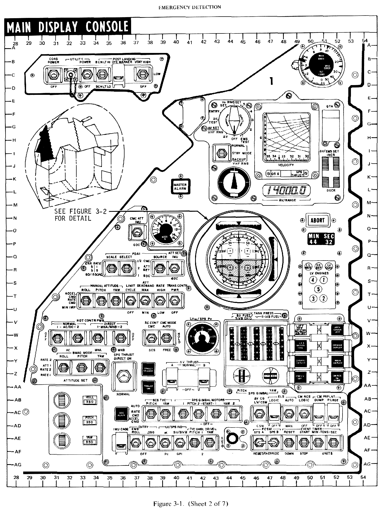

A lightweight video editor, with a renderer built for a dense, interactive UI.
In a small team, I work on the core UI and rendering systems for Blick, a cross-platform nonlinear video editor with an immediate-mode interface.
- A compute-driven, tiled renderer that evaluates signed distance fields on the GPU.
- A small rendering language interpreted in the shader, keeping CPU-side rendering logic minimal.
- Rendering caches that reuse unchanged output, with energy efficiency as a design goal.

From the Blick blogDon’t throw it all away.
Don’t throw it all away.
Caching an immediate-mode UI
How the UI Painter reuses rendered pixels behind an immediate-mode UI, and what that means for power use.
Read article ↗